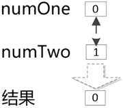
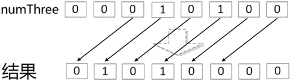

首页 > 编程笔记
Go语言运算符（超级详细）
Go语言通过算术、关系、逻辑等运算符完成多个数据的计算。
上表中列举的运算符除 % 之外均可用于整型、浮点型和复数型数据运算。% 仅可用于整型数据运算，其运算结果的符号与被除数保持一致。当被除数为正数时，余数也为正数；当被除数为负数时，余数也为负数，与除数是否为正数无关。
注意，如果算术运算结果超出了类型本身的范围，就会发生溢出现象。发生溢出现象后，程序不会有任何异常，但溢出的高位会被丢弃。
举个例子：
使用关系运算符通常会返回一个布尔型值，若大小关系的条件成立，则返回 true，否则返回 false。
举个例子：
Go 语言支持的所有逻辑运算符及其含义如下表所示。
举个例子：
Go语言提供了5个位运算符，如下表所示：
除了上表中的 5 个常见位运算符，Go语言还提供了“＆^”运算符，该运算符用于执行按位清空（AND NOT）操作。在使用该运算符时，若运算符右侧数值的第 N 位为 1，则运算结果的第 N 位为 0；若运算符右侧数值的第 N 位为 0，则运算结果的第 N 位为运算符左侧相应位的值。
举例来说，1011＆^1001 的结果是 0010。该运算符的目的是保证运算结果中的某位或某几位的值始终为 0。
举个例子：
下图直观地表示了 numOne 与 numTwo 变量的按位与操作过程。
由于 numThree 变量的值为 20，转换为二进制形式后的值为 0001 0100。在对该数值进行左移 2 位操作后，结果为 0101 0000，将其转换回十进制形式后，值为 80。类似地，在对该数值进行右移 2 位操作后，结果为 0000 0101，将其转换回十进制形式后，值为 5。
下图直观地表示了 numThree 变量的左移 2 位操作过程。
下表列举了Go语言支持的所有赋值运算符及其含义。
举个例子：
举个例子：
通过使用指针，程序员可以直接访问内存中的数据，从而实现对数据的精准管理及运算。
算术运算符
算术运算符通常用于数字型数据运算。下表列举了所有算术运算符及其含义。| 算术运算符 | 含 义 |
|---|---|
| + | 相加 |
| - | 相减 |
| * | 相乘 |
| / | 相除 |
| % | 取余数 |
| ++ | 自增1 |
| -- | 自减1 |
上表中列举的运算符除 % 之外均可用于整型、浮点型和复数型数据运算。% 仅可用于整型数据运算，其运算结果的符号与被除数保持一致。当被除数为正数时，余数也为正数；当被除数为负数时，余数也为负数，与除数是否为正数无关。
注意，如果算术运算结果超出了类型本身的范围，就会发生溢出现象。发生溢出现象后，程序不会有任何异常，但溢出的高位会被丢弃。
举个例子：
package main
import (
"fmt"
)
/*算术运算符的使用
*/
func main() {
var expNumOne=5 //声明 expNumOne 变量
var expNumTwo=6 //声明 expNumTwo 变量
fmt.Println(expNumOne+expNumTwo) //输出两个数相加的结果
fmt.Println(expNumOne-expNumTwo) //输出两个数相减的结果
fmt.Println(expNumOne*expNumTwo) //输出两个数相乘的结果
fmt.Println(expNumTwo/expNumOne) //输出两个数相除的结果
fmt.Println(expNumTwo%expNumOne) //输出两个数相除取余数的结果
expNumOne++ //expNumOne变量自增 1
fmt.Println(expNumOne) //输出运算结果
expNumTwo-- //expNumTwo变量自减 1
fmt.Println(expNumTwo) //输出运算结果
var uInt8Max uint8=255 //声明uInt8Max变量，类型为uint8,值为该类型最大值
fmt.Println(uInt8Max+1) //输出运算结果
var int8Max int8=127 //声明int8Max变量，类型为uint8,值为该类型最大值
fmt.Println(int8Max+1) //输出运算结果
}
运行结果如下：
11
-1
30
1
1
6
5
0
-128
关系运算符
关系运算符用于表示两个值的大小关系。下表列举了所有关系运算符及其含义。| 关系运算符 | 含 义 |
|---|---|
| == | 相等 |
| != | 不相等 |
| < | 小于 |
| <= | 小于或等于 |
| > | 大于 |
| >= | 大于或等于 |
使用关系运算符通常会返回一个布尔型值，若大小关系的条件成立，则返回 true，否则返回 false。
举个例子：
package main
import (
"fmt"
)
/*关系运算符的使用
*/
func main() {
fmt.Println(100==(50+50)) //输出 100 与 50+50 的值是否相等
fmt.Println((51+49)!=(50*2)) //输出 51+49 与 50*2 的值是否不相等
var text string = "abcde" //声明字符串型变量 text,值为"abcde"
fmt.Println(text[0]==97) //输出text变量中首个字符的ASCII值是否与97相等
}
运行结果如下：
true
false
true
逻辑运算符
逻辑运算符，有时又被称为逻辑连接词。顾名思义，它可以将两个逻辑命题连接起来，组成新的语句或命题，最终形成复合语句或复合命题，其返回结果为布尔型值。Go 语言支持的所有逻辑运算符及其含义如下表所示。
| 逻辑运算符 | 含 义 |
|---|---|
| && | 逻辑与（AND），当运算符前后两个条件的结果均为 true 时，运算结果为 true |
| || | 逻辑或（OR），当运算符前后两个条件的结果中有一个为 true 时，运算结果为 true |
| ! | 逻辑非（NOT），对运算符后面的条件的结果取反，当条件的结果为 true 时，整体运算结果为 false，否则为 true |
举个例子：
package main
import (
"tmt"
)
/*逻辑运算符的使用
*/
func main() {
fmt.Println(true&&false) //输出 true 和 false 的逻辑与结果
fmt.Println(true||false) //输出 true 和 false 的逻辑或结果
fmt.Println(!(true&&false)) //输出true和false的逻辑与结果的逻辑非结果
}
运行结果如下：
false
true
true
位运算符
位运算符提供了整型数据的二进制位操作。在计算机内部，所有的数据都是由二进制的 0 和 1 进行存储的，整型数据也不例外。整型数据经过位运算后，可以得到按位操作后的新数值。Go语言提供了5个位运算符，如下表所示：
| 位运算符 | 含 义 |
|---|---|
| & | 按位与（AND）操作，其结果是运算符前后的两数各对应的二进制位相与后的结果 |
| | | 按位或（OR）操作，其结果是运算符前后的两数各对应的二进制位相或后的结果 |
| ^ | 按位异或（XOR）操作，当运算符前后的两数各对应的二进制位相等时，返回 0；反之，返回 1 |
| << | 按位左移操作，该操作木质上是将某个数值乘以 2 的 n 次方，n 为左移位数。更直观地来看，其结果就是将某个数值的所有二进制位向左移了 n 个位置，并将超限的高位丢弃，低位补 0 |
| >> | 按位右移操作，该操作本质上是将某个数值除以 2 的 n 次方，n 为右移位数。更直观地来看，其结果就是将某个数值的所有二进制位向右移了 n 个位置，并将超限的低位丢弃，高位补 0 |
除了上表中的 5 个常见位运算符，Go语言还提供了“＆^”运算符，该运算符用于执行按位清空（AND NOT）操作。在使用该运算符时，若运算符右侧数值的第 N 位为 1，则运算结果的第 N 位为 0；若运算符右侧数值的第 N 位为 0，则运算结果的第 N 位为运算符左侧相应位的值。
举例来说，1011＆^1001 的结果是 0010。该运算符的目的是保证运算结果中的某位或某几位的值始终为 0。
举个例子：
package main
import (
"fmt"
)
/*位运算符的使用
*/
func main() {
var numOne int=0 //声明 numOne 变量
var numTwo int=1 //声明 numTwo 变量
fmt.Println(numOne&numTwo) //输出 numOne 和 numTwo 变量的按位与结果
fmt.Println(numOne|numTwo) //输出 numOne 和 numTwo 变量的按位或结果
fmt.Println(numOne^numTwo) //输出 numOne 和 numTwo 变量的按位异或结果
fmt.Println(numOne&^numTwo) //输出 numOne 和 numTwo 变量的按位清空结果
var numThree int=20 //声明 numThree 变量
fmt.Println(numThree<<2) //输出 numThree 变量左移 2 位后的结果
fmt.Println(numThree>>2) //输出 numThree 变量右移 2 位后的结果
}
运行结果如下：
0
1
1
0
80
5
下图直观地表示了 numOne 与 numTwo 变量的按位与操作过程。

由于 numThree 变量的值为 20，转换为二进制形式后的值为 0001 0100。在对该数值进行左移 2 位操作后，结果为 0101 0000，将其转换回十进制形式后，值为 80。类似地，在对该数值进行右移 2 位操作后，结果为 0000 0101，将其转换回十进制形式后，值为 5。
下图直观地表示了 numThree 变量的左移 2 位操作过程。

赋值运算符
赋值运算符用于为某个变量或常量赋值。除了最简单的“=”，Go语言还提供了多种丰富的赋值运算符。在大多数情况下，使用赋值运算符可以简化编码。下表列举了Go语言支持的所有赋值运算符及其含义。
| 赋值运算符 | 含 义 |
|---|---|
| = | 直接将运算符右侧的值赋给左侧的变量或表达式 |
| += | 先将运算符左侧的值与右侧的值相加，再将相加和赋给左侧的变量或表达式 |
| -= | 赋给左侧的变量或表达式侧的值相减，再将相减差赋给左侧的变量或表达式 |
| *= | 先将运算符左侧的值与右侧的值相乘，再将相乘结果赋给左侧的变量或表达式 |
| /= | 先将运算符左侧的值与右侧的值相除，再将相除结果赋给左侧的变量或表达式 |
| %= | 先将运算符左侧的值与右侧的值相除取余数，再将余数赋给左侧的变量或表达式 |
| <<= | 先将运算符左侧的值按位左移右侧数值指定数量的位置，再将位移后的结果赋给左侧的变量或表达式 |
| >>= | 先将运算符左侧的值按位右移右侧数值指定数量的位置，再将位移后的结果赋给左侧的变量或表达式 |
| &= | 先将运算符左侧的值与右侧的值按位与，再将位运算后的结果赋给左侧的变量或表达式 |
| |= | 先将运算符左侧的值与右侧的值按位或，再将位运算后的结果赋给左侧的变量或表达式 |
| ^= | 先将运算符左侧的值与右侧的值按位异或，再将位运算后的结果赋给左侧的变量或表达式 |
举个例子：
package main
import (
"fmt"
)
/*赋值运算符的使用
*/
func main() {
var numOne int=20 //声明 numOne 变量
numOne+=20 //numOne=numOne+20
fmt.Println(numOne) //输出 numOne 变量的值
numOne-=10 //numOne=numOne-10
fmt.Println(numOne) //输出 numOne 变量的值
numOne*=100 //numOne=numOne*100
fmt.Println(numOne) //输出 numOne 变量的值
numOne/=20 //numOne=numOne/20
fmt.Println(numOne) //输出 numOne 变量的值
num0ne%=4 //num0ne=num0ne&4
fmt.Println(numOne) //输出 numOne 变量的值
num0ne<<=2 //numOne=numOne<<2
fmt.Println(numOne) //输出 numOne 变量的值
num0ne>>=3 //numOne=num One>>3
fmt.Println(numOne) //输出 numOne 变量的值
numOne&=0 //numOne=numOne&0
fmt.Println(numOne) //输出 numOne 变量的值
numOne^=1 //numOne=numOne^1
fmt.Println(numOne) //输出 numOne 变量的值
numOne|=0 //numOne=numOne|0
fmt.Println(numOne) //输出 numOne 变量的值
}
运行结果如下:
40
30
3000
150
2
8
1
0
1
1
指针运算符
Go语言提供了两个指针运算符，如下表所示。| 指针运算符 | 含 义 |
|---|---|
| & | 获取某个变量在内存中的实际地址 |
| * | 声明一个指针变量 |
举个例子：
package main
import "fmt"
/*指针运算符的使用
*/
func main() {
var numOne int=5 //声明 numOne 变量，类型为 int,值为 5
var pointer *int=&numOne //声明pointer变量，类型为指针，值为numOne变量的内存地址
fmt.Println(&numOne) //输出numOne变量的实际内存地址
fmt.Println(*pointer) //输出pointer变量表示的内存地址所存储的变量的值
}
运行结果如下：
0x1400012a008
5
通过使用指针，程序员可以直接访问内存中的数据，从而实现对数据的精准管理及运算。
关注公众号「站长严长生」，在手机上阅读所有教程，随时随地都能学习。内含一款搜索神器，免费下载全网书籍和视频。

微信扫码关注公众号